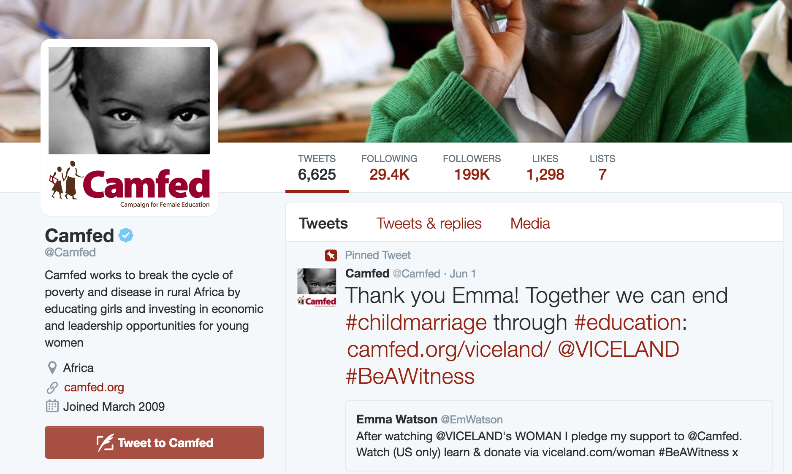

Stakeholders with potentially high philanthropic impact on Twitter for the Sustainable Development Goals.
Not mobile supported. For best quality, use a desktop with Google Chrome and a maximize browser window.
Goal
Find a smart way to keep up to date with foundations and philanthropists
on Twitter.
Strategy
Collect a sample Twitter users from relevant networks, extract
features that associated with the SDGs, and approximate philanthropic impact.
Champions (aka relevant networks)
An industry expert selected a list of champions to sample accounts:
@Alliancemag, @CEPData, @EAAG_Africa, @FCNewYork, @FordFoundation, @PennSP2, @PhilSDGs,
@SkollFoundation, @SustDev, @ThomasGass, @UN, @fdncenter, @philaction, @LeoDiCaprio, and
@theGIIN.
Data
Our sample consists of 13,220 twitter accounts from the champion's pool of friends. After
removing duplicate accounts, we have 10,220 unique accounts remaining. Modeling was conducted
only unique accounts.
Outcomes
Twitter Verification

An account may be verified if it is determined to be an account of public interest. Typically
this includes accounts maintained by users in music, acting, fashion, government, politics,
religion, journalism, media, sports, business, and other key interest areas.
Philanthropic Potential
Natural language processing was used to detect user mentions, hastags, and key words affiliated with the SDGs accounts bios. They included: #Phil2015, #sustdev, #FFD, #UNGA, #unga70, #sdg, #csr, #GlobalGoals, #socinv, #sdgs, #Agenda2030, #Post2015, #LeaveNoOneBehind, #globaldev, 'Foundation', 'philanthropy', 'charity', 'fdn', 'funders', 'Fundacion', 'Fundación', 'sdgs', and 'Sustainable Development Goals'.
Features
Counts of user favourites, followers, friends, statuses were used to
train the model. Additional features were binary indicators: Geo enabled, tags mentioned, and users
mentioned.
Models
Linear models performed the best as Logistic Regression and Support Vector
Machines both out performed Random Forest at a similar rate. Given the unbalanced nature of our
sample, we used ROC AUC to evaluate the model. The mean 10 fold cross validation score was 80%.
Visualization
For the visualization, axes are interpolated with a Log scale
(base 10) using d3.js. Twitter Score is determined by predicted probabilities associated with being
Twitter verified. Philanthropic Impact Score was determined by predicted probabilities of meeting
the criteria of Twitter verified and SDGs relevant. Both scores were achieved with Logistic
Regression. Axes are interpolated with a Log scale (base 10) using d3.js.
Attribution
Thank you font-awesome for providing the Twitter icon, Twitter for
having a generous public API, and SDGfunders for providing the domain expertise. You can access the
repo for our work and additional technical methodology via Github here.